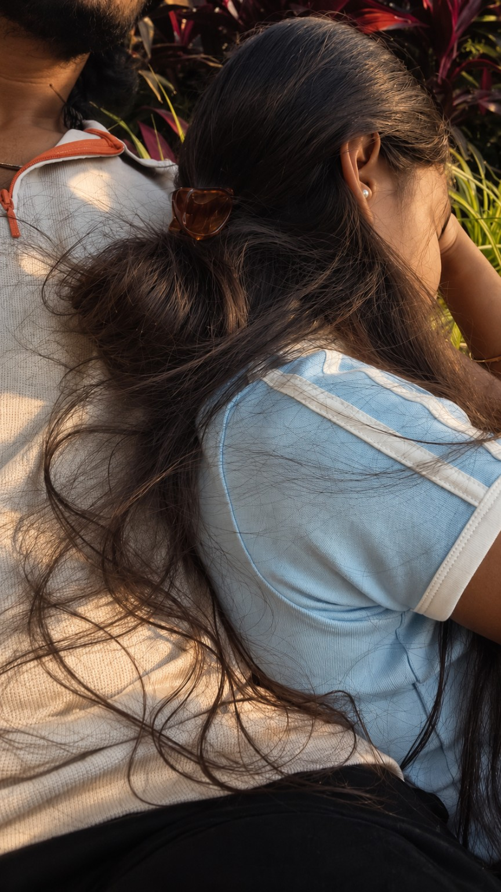
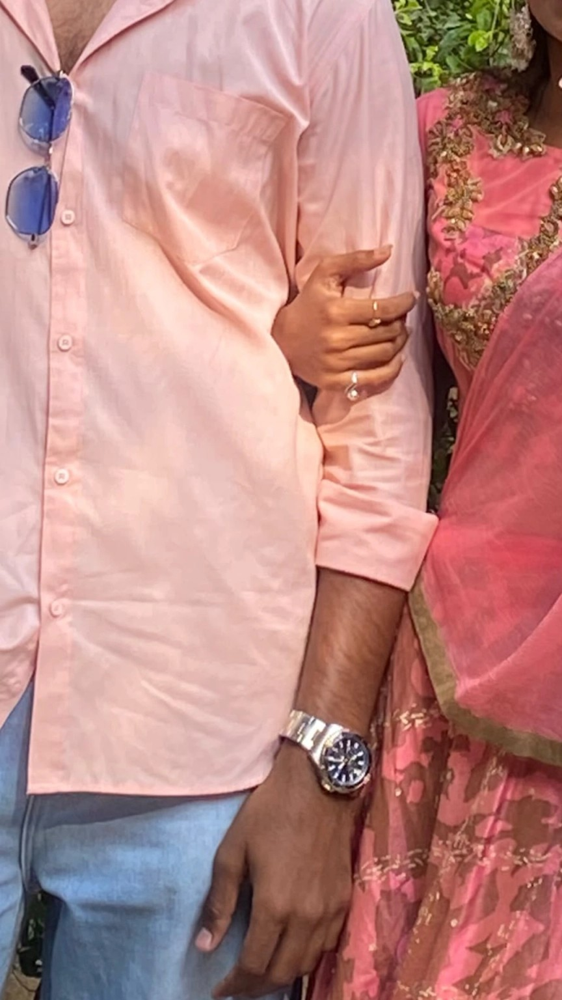
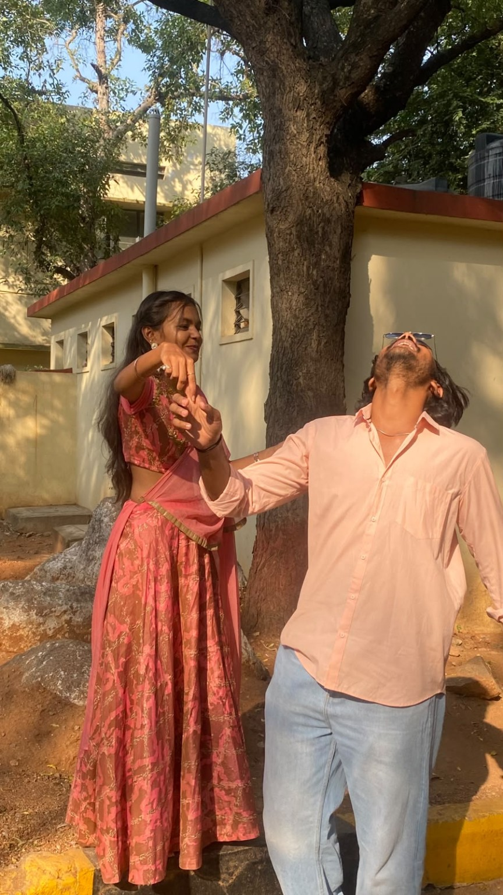
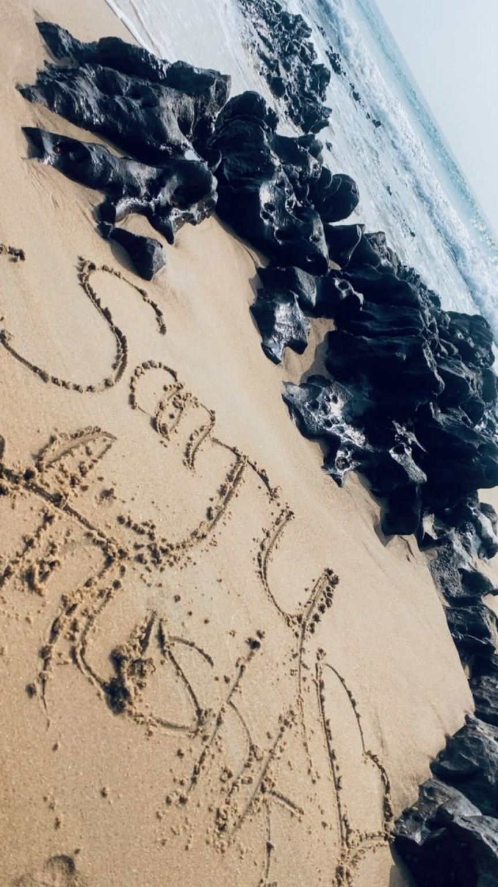
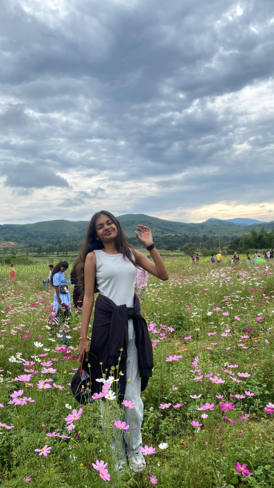
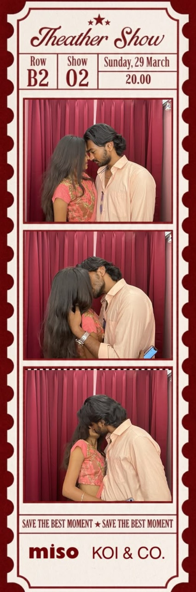
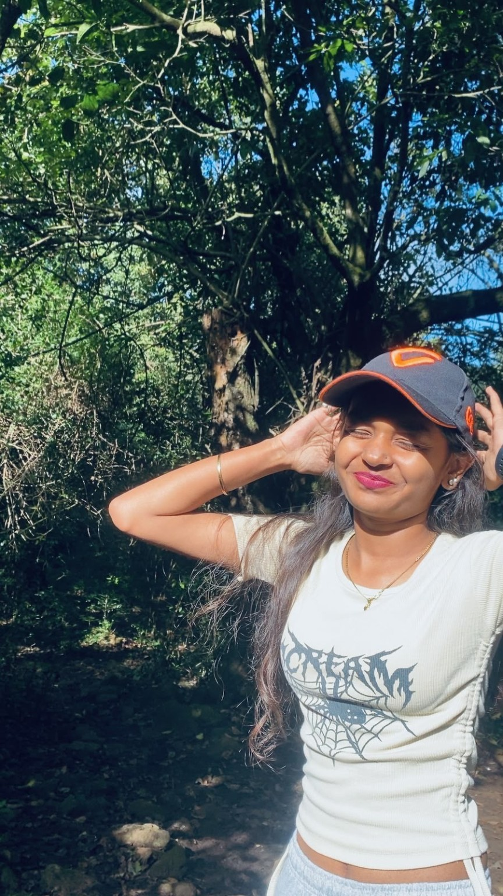
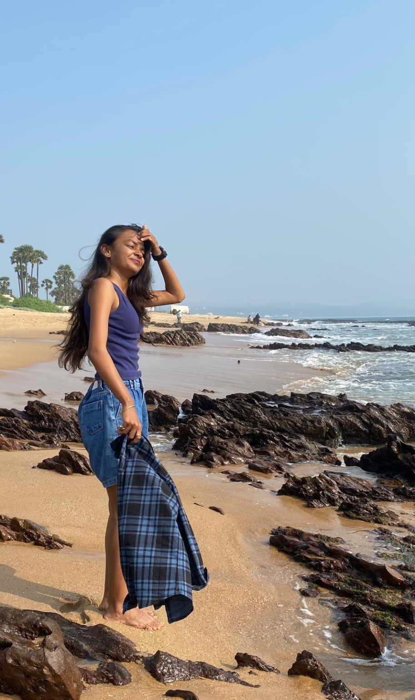

A little surprise, made just for you
This surprise
is for Anu.
Take your time with this one. There are a few memories, a few things I wanted to say, and a little corner of the internet that belongs to you today.
Best opened slowly, with a little time to yourself.
01 · A little something for you
Happy birthday, Anu.
You're home now? Okay. I saved one more thing for you.

I wanted you to have something you could open later, take your time with, and come back to whenever you feel like it. No big speech needed. Just us, and a few things I wanted you to know.
02 · Where it started
From projects
to us.

We met through the web updations department in college, working on the same projects. It wasn't some movie-style beginning with dramatic music and perfect timing. We were just doing our work, sharing little moments, and somehow you became someone I looked forward to seeing.
And then, somewhere along the way, you stopped being just the girl I worked with and became my person. Funny how life does that without asking permission first.
I don't know the exact moment it changed. I just know I'm glad it did.
03 · One of my favourites
That day in Hyderabad.

Lumbini Park, then Birla Mandir. A day I keep coming back to in my head. Not because everything had to be perfect, but because I got to spend that time with you.
I remember the feeling of being there together. The little conversations, the laughter, the ordinary bits that somehow become the bits you hold onto.
I hope we get to make many more days like that — the kind we don't realise are becoming favourite memories until later.
04 · Little pieces of us
Not every memory needs a caption.

Little details I know I'll remember.
Sometimes it's not even the whole day you remember. It's a tiny detail, the way you looked, something you said, or a photo that makes you smile before you even realise why.
And yes, I'm keeping the photos. You don't get to complain about being cute and then expect me not to save evidence. ♡
05 · Extremely serious research
100 kgs.
100 cms.

A relationship built on love, trust, and questionable measurements. One of us brings 100 kgs of nonsense; the other brings 100 cms of attitude.
I love when you scold me, tease me, and still take care of me like I'm your baby. Even when you're pretending to be annoyed, you have this way of making me feel looked after. I hope you know I notice those little things.
Unsolved mystery #1: what exactly is “bli blu”? I've been thinking about this and I still have questions, Anu. Please provide a formal explanation when convenient.
06 · A very serious test
How well do you know us?

Five questions. No pressure. Your examiner is biased and will probably give you a hint.
07 · Little reminders of my love
A few things, for you.

Each gift is a small thing compared with what you mean to me, but I wanted every one to have its own little meaning. Tap each one when you're ready.
Something close to you, something you can wear on ordinary days and special ones. I hope it reminds you that someone is thinking of you, even when I'm not right beside you.
A little circle, and a little reminder of us. Not a grand promise hidden in jewellery — just a thoughtful gift for the girl I'm really happy to call mine.
For your wrist, and for all those little moments still waiting for us. I hope it becomes one of those things you put on without thinking and then remember where it came from.
Because I can already imagine you wearing them. And because sometimes I just want to give you something pretty, with no reason other than you being you.
These are the words I wanted you to have in my handwriting, not just on a screen. Keep them, reread them whenever you want, and please know that I meant them.
08 · What I hope you know
It's the little things about you.

Anu, I love the way you carry yourself, the way you tease me, the way you scold me when I deserve it, and the way you care for me like I'm your baby. You can make me laugh and annoy me in the same five minutes, and somehow I still want to tell you everything that happens in my day.
I don't always say it properly, but I notice the small things. The concern behind your scolding. The affection hidden in your teasing. The way you make room for me in your life. Those things matter to me more than I can fit into one page.
I'm really glad I have you in my life. I don't expect us to be perfect every day. I just want us to keep learning each other, being honest, making up after silly arguments, laughing at jokes that are probably only funny to us, and choosing to show up for each other.
Happy birthday, my girl. I hope you remember how special you are to me, even on the most ordinary days.
09 · Just because it's you
A little more of Anu.

This is your reminder that you don't have to be dressed up, doing something special, or trying to impress anyone to be lovely to me. I like the real you. The silly you, the stubborn you, the sleepy you, the you who roasts me and then checks if I've eaten.
I hope this year brings you more things that make you feel proud, peaceful, excited, and genuinely happy. I'll be cheering for you — and probably teasing you a little while I do it.
10 · Before you go
For you, Anu.

Put our song on if you want to. Take another look through the photos. Read the letters again. And if you ever have one of those days when you need a reminder that you're loved, come back here.
I'm still figuring out plenty of things — including “bli blu” — but I'm sure about this: I'm happy it's you I'm getting to know, laugh with, and make memories with.
♡
Made with love, a little bit of overthinking, and absolutely no understanding of bli blu.